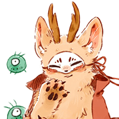
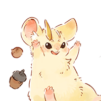
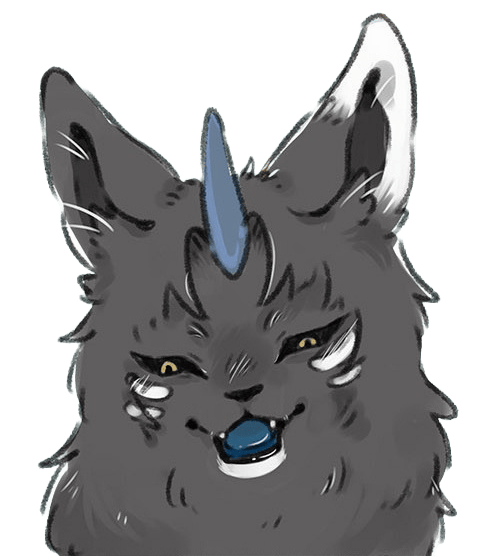
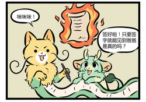
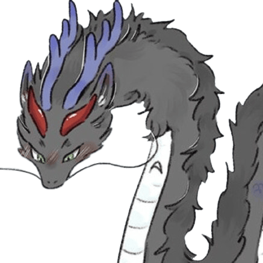
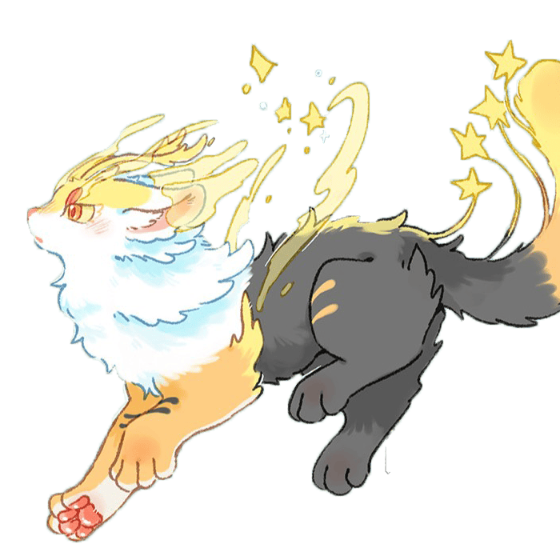

角色图鉴
收录所有登场神兽与凶兽角色
天禄（貔貅）
貔貅兄弟中的弟弟，小名皮皮，蓝色貔貅，暂住鹿人店。性格豪爽直率，是鹿人店的核心成员。与哥哥辟邪感情深厚，曾经历上古、中古、近古多个时代，见证了无数神兽的悲欢离合。
辟邪（貔貅）
貔貅兄弟中的哥哥，红色貔貅，平时生活在天禄肚子里。性格沉稳可靠。第97话首次露角登场。与弟弟天禄失散多年后重逢，目前生活在鹿人店。拥有辟邪驱凶的能力，是天禄最信赖的兄长。

四不像（姜子牙坐骑）
戴着神秘面具的麋鹿，鹿人店店长。原是普通麋鹿，后天庭为其戴上四不相骨面具。外形似鹿非鹿、似牛非牛、似马非马、似驴非驴。性格憨厚老实，是鹿人店的元老级成员。出场次数最多的角色之一，几乎贯穿全部故事线。

四不相（始麒麟之子）
始麒麟之子，与四不像（姜子牙坐骑）是不同的角色。在中古篇中与貔貅兄弟结伴旅行，最终不幸离世。其死亡对天禄和辟邪产生了深远影响。

兔爷（兔神）
月宫退休兔子，追随四不像到云南，在人类社会生活时间最长。身穿铠甲的兔形神兽，性格沉稳可靠。拥有强大的战斗力，是鹿人店的守护者之一。小玉的前男友。

核桃
一只两百来岁的孟极幼崽，被父母抛弃邮寄到鹿人店，与福仔、翔太成为朋友。

福仔
一只来自日本的稻荷狐狸，主司丰收，偷吃天禄豆腐被发现后住在鹿人店。

翔太
一只来自日本的稻荷狐狸，主司智慧，福仔的青梅竹马，核桃的情敌。

金角
原天庭太上老君的炼丹童子，因和弟弟银角烧糊丹被贬下凡间。头生金角的年轻神兽，性格急躁但重情义。与银角是兄弟，擅长炼丹术。在鹿人店中负责各种杂务，是团队中的行动派。
银角
金角的弟弟，和金角一起住在鹿人店。头生银角的年轻神兽，性格温和细心。擅长医术，在鹿人店中负责照顾受伤的神兽，是团队中的治愈者。

吐宝神鼬（吐宝鼠）
上古神兽，全名吐宝神鼬，吃什么都会吐摩尼宝珠。

凤皇（凤凰）
百鸟之王，拥有浴火重生的能力。外表华丽威严，性格高傲但内心善良。在上古时代就与貔貅兄弟有渊源。

战虎
上古蚩尤坐骑之一，守护宝剑化石像，与夹竹桃一同寻找阿姐棉桃。

谛听（地藏菩萨坐骑）
地府高管，善听人心能辨真假，地藏菩萨生前养的小白狗，能与大地说话。

始麒麟（万兽之祖）
万兽之祖，四不相的父亲。在上古时代是所有神兽的领袖，拥有至高无上的地位。虽然出场不多，但对整个故事线有着深远的影响。

巴陵君
来自巴陵的神秘神兽，性格优雅从容。拥有操控水的能力，与鹿人店的众人有着千丝万缕的联系。

永夜
神秘的暗属性神兽，行踪不定。拥有操控黑暗的能力，性格冷峻寡言。其真实身份和目的仍是故事中的重要谜团。

擎火
火属性神兽，拥有强大的火焰操控能力。性格热情奔放，与凤皇有着特殊的渊源。

盘湖
来自南山的蛮夷之犬，头有三道条纹中红旁青，脑后光环，浑身雪白。

獬豸（法兽）
能辨善恶，学识渊博，核桃翔太福仔的老师，穷奇的死对头，有48个分身。

诸犍
又名胖郎神，力大无穷，走路要叼着尾巴，能闻到恐惧的味道。

令狐紫
一只紫狐，善用狐火，夜间甩动尾巴能冒出紫色火星。

魔王松鼠（松鼠大哥）
曾经称霸一方的松鼠凶兽，拥有强大的暗属性力量。虽然被称为"魔王"，但内心深处有着柔软的一面。其死亡是故事中令人动容的篇章。

夹竹桃
雄性孟极，核桃的舅舅，目前正与战虎一同寻找阿姐棉桃。

饕餮（四凶之一）
大名桃桃，因太贪吃吃掉除头以外所有部位，有翅膀但不会飞。

穷奇（四凶之一）
上古四大凶兽之一，打小就是话唠，獬豸的死对头，有48个分身。

梼杌（四凶之一）
上古四凶之一，以顽固不化著称。外形似虎犬，拥有坚硬的躯体。性格固执己见，一旦认定的事情绝不改变。

混沌（四凶之一）
有目不能视，双耳不能闻，四足不能行，天地孕育的第二代生灵。粉色毛绒身体，青蓝翅膀与孔雀尾羽，额生第三只眼。帝江死后彻底发疯，化作彩云山脉，已故。

帝江（上古神兽）
上古时代的强大神兽，与混沌有着深厚的羁绊。其死亡是整个故事中最令人心碎的事件之一，直接导致了混沌的疯狂和后续一系列悲剧。

棉桃
外表柔软可爱的棉属性神兽，性格温柔善良。是鹿人店中深受大家喜爱的成员，经常用柔软的身躯安慰受伤的同伴。

英招
上古神兽，拥有操控植物的能力。性格正直豪爽，虽然出场不多但每次出现都给人留下深刻印象。

七十七
第三只貔貅，黑色，从天庭跑出来只为见到同类。

刍狗
草扎成，稻草色为主，米白色条状斑纹扎小辫子，尾巴呈散花状。

小髅
全名骷髅猫，谛听在奈何桥下发现并复活，生前被虐待至死。

凤凰（凤皇(别称)）
与凤皇密切相关的火属性神鸟，拥有浴火重生的能力。在故事中与凤皇有着不可分割的联系。

烛阴（烛龙）
镇守钟山的远古神兽，拥有操控昼夜的能力。睁眼为昼，闭眼为夜，是上古时代最强大的存在之一。

二两
东海龙子敖丙和瓦猫的私生子，龙身猫首，担任鹿人店的快递员工作。

八斤
东海龙子敖丙和瓦猫的私生子，猫身龙首，二两的弟弟和喵语翻译官。
荔枝
一只来自城市的开运麒麟，摸她可以去除霉运同时她会变黑，与壮壮结为夫妻。
壮壮
一只因体小耳软外抑郁而不被天庭录取遣送回凡间的天马，与荔枝结为夫妻。
慕容雪川（美美）
别名美美，为了混入上流社会而住进鹿人店，目前在鹿人店打工，认天禄为大哥。

巴赫
一只已经化龙的蛟龙，曾拜巴陵君为师，小名巴狗蛋，现已失忆。
花椒
一只乘黄，曾被书生坑骗并关进人类的监狱，逃出时受重伤，现已痊愈并离开鹿人店。

睚眦
龙之二子，因盗版商品问题被四不像装进瓶子，后在仓库整理中找到趁机逃出鹿人店。
猫猫泪
来自亶爰山的类，到云彩山脉寻找葬身之处，求四不像给他一个定居之所。

流星
一只天狗，在广阔的天空中翱翔驰骋，被另一只天狗撞掉保持平衡的星星，像流星一样坠落在彩云山脉。
未找到匹配的角色